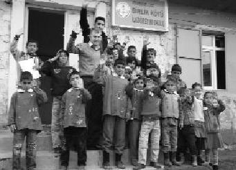

Küçücük yüreklerin karşında bir anda büyümesi kadar heyecan verici bir şey daha yok bu dünyada. Türkiye Uğur Böcekleri'nin bir parçası olduğum ve bu projede yer aldığım için çok mutluyum. Yaşasın BÖÖÖCÜK GÜCÜ... (Davut Kör)
Davut projenin en yürekli gençlerinden biridir. Nerede eksik varsa Davut oradaydı. Atladı güneydoğuya gitti, köyleri dolaştı. Gençlerin ve çocukların kalbine dokundu. Davut'un dostları ve ailesi çok şanslı, çünkü bu çocuk kimseyi yarı yolda bırakmaz. Çok sağlam adamdır Davut.